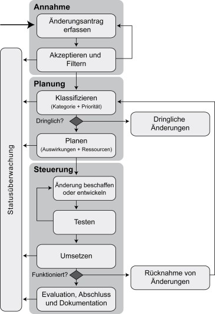

Aufgabe des Änderungsmanagements ist es, verändernde Eingriffe in Anwendungen, Infrastruktur, Dokumentationen, Prozesse und Verfahren steuer- und kontrollierbar zu gestalten. Ein fehlendes oder vernachlässigtes Patch- und Änderungsmanagement führt schnell zu Sicherheitslücken in den einzelnen Komponenten und damit zu möglichen Angriffspunkten.
Vor allem im Bereich der Informationstechnologie stehen viele Behörden und Unternehmen aufgrund der immer schneller fortschreitenden Entwicklung und der steigenden Anforderungen der Benutzer vor der Herausforderung, die notwendigen Neuerungen an den Komponenten ihrer Systemlandschaft korrekt und zeitnah zu übernehmen. Erfahrungen in Behörden und Unternehmen zeigen, dass Sicherheitslücken oder Störungen häufig auf fehlerhafte oder nicht erfolgte Änderungen zurückzuführen sind.
In diesem Dokument wird aufgezeigt, wie ein funktionierendes Patch- und Änderungsmanagement in einer Institution aufgebaut werden kann. Auch wird beschrieben, wie der entsprechende Prozess kontrolliert und optimiert werden kann, damit Störungen im Betrieb vermieden sowie Sicherheitslücken minimiert und zeitnah beseitigt werden können. Die Beschreibungen konzentrieren sich dabei auf den IT-Betrieb, können aber auch sinngemäß in anderen Geschäftsprozessen umgesetzt werden. Der Begriff Änderungsmanagement bezeichnet in diesem Baustein die Aufgabe, Änderungen zu planen und zu steuern. Das Patchmanagement stellt einen Teilbereich des Änderungsmanagements dar, der auf die Aktualisierung von Software zielt und in jedem Fall anzuwenden ist.
1.2 Lebenszyklus
Um ein effektives System einzurichten, mit dem Änderungen behandelt werden können, sind eine Reihe von Schritten zu durchlaufen.
Planung und Konzeption
Über das Patch- und Änderungsmanagement sollten alle Änderungen an Hard- und Softwareständen sowie deren Konfigurationen gesteuert und kontrolliert werden. Um alle Änderungen erfassen und bewerten zu können, sollten alle innerhalb des Patch- und Änderungsmanagements erfassten IT-Systeme diesem unterstellt sein (siehe OPS.1.1.3.M2 Festlegung der Verantwortlichkeiten für das Änderungsmanagement). Änderungen an der Konfiguration und dem Zustand der Systeme sind damit nur noch über das Änderungsmanagement möglich. Das erfordert von der Leitung der Institution, die entsprechende Verantwortung zu delegieren. Die organisatorische Umsetzung des Patch- und Änderungsmanagements stellt eine Querschnittsfunktion durch verschiedene Abteilungen einer Institution dar. Insbesondere sind der IT-Betrieb, das Informationssicherheitsmanagement und die Fachabteilungen einzubinden.
Ein einzelner Änderungsvorgang beginnt mit einer Änderungsanforderung. Diese sollte zunächst erfasst und durch den Änderungsmanager kontrolliert werden. Zu dieser Änderung sollten Relevanz, Dringlichkeit, geplante Durchführung (Termin, Ablauf) sowie mögliche Risiken und Probleme zusammengestellt und erfasst werden (siehe OPS.1.1.3.M4 Planung des Änderungsmanagementprozesses und OPS.1.1.3.M5 Umgang mit Änderungsanforderungen).
Das Patch- und Änderungsmanagement kann durch technische Hilfsmittel, beispielsweise zum automatischen Verteilen von Software, sinnvoll unterstützt werden. Werden für die Umsetzung des Patch- und Änderungsmanagements spezielle Tools eingesetzt, so muss sichergestellt werden, dass ein Konzept für deren Einsatz erstellt wird (siehe OPS.1.1.3.M8 Sicherer Einsatz von Änderungsmanagement-Werkzeugen).
Beschaffung
Es gibt unterschiedliche Produkte, die den Patch- und Änderungsmanagementprozess unterstützen. Um aus diesen Produkten eine geeignete Auswahl zu treffen, müssen vor der Beschaffung die Anforderungen an diese Werkzeuge, zum Beispiel, welche Plattformen unterstützt werden müssen, festgelegt werden (siehe OPS.1.1.3.M8 Sicherer Einsatz von Änderungsmanagement-Werkzeugen ).
Umsetzung
Bei der Umsetzung sollten alle vom Patch- und Änderungsmanagement betreuten IT-Systeme diesem einzeln oder gruppenweise unterstellt werden. Des Weiteren müssen Änderungen an diesen Systemen an einer zentralen Stelle dokumentiert werden (siehe OPS.1.1.3.M11 Kontinuierliche Dokumentation der Informationsverarbeitung).
Betrieb
Je nach Größe und Komplexität eines Patches oder einer durchzuführenden Änderung wird empfohlen, in einem Durchführungsplan Tests, Kontroll- und Abbruchpunkte sowie Prioritäten für die Verteilung zu definieren. Dabei muss sichergestellt werden, dass das angestrebte Sicherheitsniveau während und nach der Änderung erhalten bleibt. Die Freigabe und Durchführung von Änderungen sollten abgestimmt und dabei Ressourcen und Interessen von Fachbereichen und IT-Betrieb berücksichtigt werden (siehe OPS.1.1.3.M7 Integration des Änderungsmanagements in die Geschäftsprozesse und OPS.1.1.3.M6 Abstimmung von Änderungsanforderungen).
Zur Qualitätssicherung und um Fehler erkennen beziehungsweise zukünftigen Fehlern vorbeugen zu können, sollte jeder Patch und jede Änderung, nachdem sie aufgespielt wurde, bewertet werden (siehe OPS.1.1.3.M13 Erfolgsmessung von Änderungsanforderungen).
Änderungen, insbesondere Softwareaktualisierungen, können manuell, aber auch mithilfe von geeigneten Tools durchgeführt werden. Bei Einsatz dieser Werkzeuge ist darauf zu achten, dass diese gegen Missbrauch besonders gesichert sind, und nicht zu einer Gefährdung der Gesamtsicherheit führen, da sie häufig mit Systemadministrator-Berechtigungen arbeiten. Die Tools bieten die Möglichkeit, an vielen Systemen gleichzeitig Änderungen durchzuführen. Dadurch multiplizieren sich aber auch die Auswirkungen von Fehlern, sodass sehr sorgfältig getestet werden sollte, bevor die Änderung durchgeführt wird (siehe OPS.1.1.3.M12 Skalierbarkeit beim Änderungsmanagement). Zu berücksichtigen ist ebenfalls, dass umzustellende Systeme zeitweise oder permanent abgeschaltet bzw. nicht erreichbar sein könnten. Dies betrifft vor allem mobile Geräte wie zum Beispiel Laptops und Smartphones (siehe OPS.1.1.3.M14 Synchronisierung innerhalb des Änderungsmanagements). Außerdem muss während des gesamten Patch- und Änderungsmanagementprozesses die Integrität und Authentizität der verwendeten Software technisch sichergestellt werden (OPS.1.1.3.M10 Sicherstellung der Integrität und Authentizität von Softwarepaketen).
Die Autoupdate-Mechanismen verwendeter Software müssen, unabhängig von ihrem Einsatzgrad innerhalb des Patch- und Änderungsprozesses, betrachtet werden (siehe OPS.1.1.3.M3 Konfiguration von Autoupdate-Mechanismen).
Notfallvorsorge
Für die Notfallvorsorge müssen die einzelnen Notfallpläne der Anwendungen und IT-Systeme, die vom Patch- und Änderungsmanagement verwaltet werden, berücksichtigt werden (siehe DER.4 Notfallmanagement). Da das Patch- und Änderungsmanagement zur technischen Umsetzung von Sicherheit in der Institution beiträgt, sollten geeignete technische Redundanz- und Ersatzsysteme bereitgestellt werden, um einem nicht kompensierbaren Ausfall entgegenzuwirken. Des Weiteren sind Vertreterregelungen von besonderer Bedeutung, um den Entscheidungs- und Freigabeprozess aufrecht zu erhalten.
2 Maßnahmen
Im Folgenden sind spezifische Umsetzungshinweise im Bereich "Patch- und Änderungsmanagement" aufgeführt.
2.1 Basis-Maßnahmen
Die folgenden Maßnahmen sollten vorrangig umgesetzt werden:
OPS.1.1.3.M1 Konzept für das Patch- und Änderungsmanagement[Administrator, Fachverantwortliche]
Bei der Komplexität heutiger IT-Systeme können bereits kleine Änderungen an laufenden Systemen zu Sicherheitsproblemen führen, z. B. durch unerwartetes Systemverhalten oder Systemausfälle.
In Bezug auf Informationssicherheit ist es Aufgabe des Änderungsmanagements, neue Sicherheitsanforderungen zu erkennen, die sich aus Änderungen an IT-Systemen ergeben. Sind signifikante Hardware- oder Software-Änderungen an einem IT-System geplant, so ist zu untersuchen, wie sich diese auf die Sicherheit des Gesamtsystems auswirken. Änderungen an einem IT-System dürfen nicht dazu führen, dass einzelne Sicherheitsmaßnahmen ineffizienter werden und so die Gesamtsicherheit gefährdet ist.
Daher sollte es Richtlinien für die Durchführung von Änderungen an IT-Komponenten, Software oder Konfigurationsdaten geben. Alle Änderungen an IT-Komponenten, Software oder Konfigurationsdaten sollten geplant, getestet, genehmigt und dokumentiert werden. Es ist dafür zu sorgen, dass auf alle sicherheitsrelevanten Änderungen angemessen reagiert wird. Dazu gehören zum Beispiel:
Änderungen an IT-Systemen (neue Applikationen, neue Hardware, neue Netzverbindungen, Modifikationen an der eingesetzten Software, Einspielen von Sicherheitspatches, Aufrüstung der Hardware usw.),
Änderungen in der Aufgabenstellung oder in der Wichtigkeit der Aufgabe für die Institution,
Änderungen in der Benutzerstruktur (neue, etwa externe oder anonyme, Benutzergruppen),
räumliche Änderungen, z. B. nach einem Umzug.
Bevor Änderungen genehmigt und umgesetzt werden, ist zu prüfen und zu testen, ob das Sicherheitsniveau während und nach der Änderung erhalten bleibt. Wenn Risiken, insbesondere für die Verfügbarkeit, nicht auszuschließen sind, muss eine Rückfall-Lösung geplant werden, die auch Kriterien vorgibt, wann sie angewendet werden soll.
Alle Änderungen und die dazugehörigen Entscheidungsgrundlagen sind zu dokumentieren. Das gilt sowohl in der Betriebs- als auch in einer Testumgebung.
Wichtig für das Patch- und Änderungsmanagement ist auch ein Berechtigungskonzept:
Nur diejenigen, die Änderungen durchführen dürfen, sollten Zugriffsberechtigungen auf die dafür relevanten Systembereiche haben.
Es sollte Mechanismen geben, die sicherstellen, dass alle wesentlichen Änderungen vorher abgestimmt wurden.
Hinweis: Bei der Durchführung von Änderungen sollte immer beachtet werden, dass Änderungen eines IT-Systems oder seiner Einsatzbedingungen
Änderungen in der Umsetzung einzelner Sicherheitsmaßnahmen,
die Erstellung eines neuen Sicherheitskonzepts oder sogar
die Überarbeitung der organisationsweiten Leitlinie zur Informationssicherheit
erforderlich machen können. Bei größeren Änderungen sollte daher das Informationssicherheitsmanagement einbezogen werden.
OPS.1.1.3.M2 Festlegung der Verantwortlichkeiten[Leiter IT]
Beim Aufbau des Patch- und Änderungsmanagements müssen eine Reihe von Verantwortlichkeiten geregelt werden. Dabei ist sicherzustellen, dass für jeden Aufgaben- und Organisationsbereich exakt definiert ist, welche Verantwortlichkeiten im Patch- und Änderungsprozess ein Mitarbeiter besitzt und wie die Koordination zwischen den einzelnen Bereichen abzulaufen hat.
Teilweise ist es üblich, dass die Mitarbeiter verschiedener Bereiche einer Institution unterschiedliche Verantwortlichkeiten bezüglich der Durchführung von Änderungen besitzen. So kann beispielsweise ein Bereich für Betriebssysteme zuständig sein und ein anderer Bereich die darauf installierten Dienste (z. B. E-Mail-Server, Fachanwendung etc.) betreuen. Das kann dann dazu führen, dass unterschiedliche Bereiche beispielsweise für das Patchen eines Gesamtsystems verantwortlich sein können. In solchen Fällen ist es besonders wichtig, die Zuständigkeiten genau festzulegen.
Die so aufgeteilten Verantwortlichkeiten sollten sich auch im Berechtigungskonzept wieder finden.
Für die effiziente und effektive Koordination und Bewertung der Änderungen sollte in der Institution ein dedizierter Änderungsmanager (Change Manager) benannt sein. Er filtert, akzeptiert und klassifiziert sämtliche Änderungsanforderungen. Er ist zudem dafür verantwortlich, die notwendigen Änderungen zu autorisieren sowie sie zu planen, zu koordinieren und durchzuführen.
Es ist unbedingt erforderlich, dass Änderungen koordiniert ablaufen. Kein Mitarbeiter darf Änderungen auf eigene Faust durchführen. Auch alle Mitarbeiter des IT-Betriebs müssen relevante Änderungen grundsätzlich mit dem Änderungsmanagement absprechen. Damit wird sichergestellt, dass etwaige Änderungen sich nicht gegenseitig behindern oder gar zu einem Systemausfall führen.
Bei einer Institution mindestens mittlerer Größe oder mit komplexen IT-Infrastrukturen sollte der Änderungsmanager bei seiner Arbeit durch ein Change Advisory Board (CAB) unterstützt werden. Es hat sich bewährt, neben den mit der technischen Umsetzung von Änderungsaufgaben betrauten Personen auch eine Person aus jeder Fachabteilung als Mitglied in das CAB zu berufen. Das CAB wird regelmäßig zu bestimmten Zeiten einberufen, um Änderungen zu beurteilen und dem Änderungsmanager zu helfen, diese einzuschätzen, zu priorisieren und zu autorisieren. In der Regel werden dem CAB nur schwerwiegende Änderungen vorgelegt. Zu diesem Zweck kann das CAB hinsichtlich seiner Mitglieder unterschiedlich zusammengesetzt sein. Das komplette CAB könnte beispielsweise alle drei Monate zusammenkommen und über kritische Änderungsanforderungen diskutieren.
Für unkritische regelmäßige Änderungen können die Absprachen direkt zwischen dem Änderungsmanager und den verantwortlichen Administratoren bzw. dem Test-Team erfolgen.
Damit das CAB seine Aufgaben angemessen erfüllen kann, müssen seine Mitglieder in der Lage sein, zu beurteilen, wie sich Änderungen sowohl technisch als auch aus Sicht der Geschäftsziele und -prozesse auswirken können.
OPS.1.1.3.M3 Konfiguration von Autoupdate-Mechanismen[Administrator]
Viele Produkte verfügen über automatische Update-Mechanismen (Autoupdate), die die Anwender darüber informieren, wenn Patches oder Updates vorhanden sind. Häufig bieten diese auch die Option, die Updates sofort über das Internet herunterzuladen und zu installieren. In der Regel enthalten heute alle Betriebssysteme und verfügbaren Standardsoftwarepakete solche Mechanismen. Die Funktionsweise des Update-Mechanismus ist je nach Version, Installationsmodus und Hersteller unterschiedlich ausgeprägt.
Üblicherweise suchen IT-Produkte mit Autoupdate bei jedem Start des Systems bzw. der Software oder zeitlich gesteuert auf einem öffentlichen Updateserver nach neuen Versionen oder Softwarepaketen. Die Produkte bieten verschiedene Möglichkeiten, den Autoupdate-Mechanismus zu konfigurieren. Wenn neue IT-Komponenten in Betrieb genommen werden, sollte immer auch überprüft werden, ob und welche Update-Mechanismen diese haben und wie diese konfiguriert werden können. Dabei sollte auch kontrolliert werden, welche Daten vom Autoupdate-Mechanismus zum Hersteller übertragen werden. Es sollte zunächst grundsätzlich geklärt werden, wie mit diesen Mechanismen umgegangen wird. Danach sollte festgelegt werden, wie die Update-Funktionen konkret in den verschiedenen Produkten konfiguriert werden. Die folgenden Abschnitte geben einen Überblick über die verschiedenen Varianten dieser Mechanismen.
Nicht in jeder Software lässt sich die Update-Funktion vollständig deaktivieren. Falls die Institution die unkontrollierte Kommunikation von IT-Komponenten mit der Außenwelt unterbinden will, müssen hierfür Paketfilter eingesetzt werden.
Wird keine Abfrage eines öffentlichen Update-Servers gewünscht, lassen sich viele Softwareprodukte auf andere Internet-Adressen als die des Herstellers, beispielsweise interne, umlenken.
Einige Hersteller bieten Software für den Eigenbetrieb von Update-Servern oder Update-Spiegelservern an, dabei wird der Update-Server in der Institution lokal installiert (z. B. Windows Server Update Services WSUS). Der Update-Server kommuniziert dann direkt mit dem Hersteller und lädt die gewünschten Aktualisierungen. Der Vorteil dieser Lösung ist, dass die von der Aktualisierung betroffenen IT-Systeme einer Institution nicht selber mit dem Update-Server des Herstellers kommunizieren müssen, sondern nur mit dem lokal installierten System. Dadurch kann der Datenverkehr nach außen auf ein Mindestmaß reduziert werden. Bei vielen Produkten für Update-Server lassen sich die gewünschten Einstellungen komfortabel über eine grafische Benutzeroberfläche (GUI) vornehmen. Allerdings gibt es auch Produkte, bei denen die notwendigen Einstellungen, um lokale Update-Server zu verwenden oder die Abfrage von einem öffentlichen Update-Server zu unterbinden, verborgen oder nur per Paketfilter bzw. Firewall zu unterbinden sind.
Falls öffentliche Update-Server genutzt werden sollen, so ist zunächst die Authentizität des Update-Servers zu prüfen (siehe OPS.1.1.3.M10 Sicherstellung der Integrität und Authentizität von Softwarepaketen). Außerdem sollte untersucht werden, ob sich Update-Abfrageaktionen mithilfe von Zeitintervallen oder Ereignissen einstellen lassen. Die Einstellungen müssen dann entsprechend der festgelegten Änderungsstrategie vorgenommen werden.
Es sollte geprüft werden, wie die Kommunikation mit Update-Servern auf das geringst mögliche Maß beschränkt werden kann. Außerdem muss entschieden werden, ob die direkte Kommunikation mit dem Hersteller als einzige Alternative oder parallel zur internen Kommunikation (Parallelkonfiguration) betrieben werden soll.
Eine Parallelkonfiguration ist häufig sinnvoll für mobile Nutzer, die nicht immer innerhalb des Behörden- oder Unternehmensnetzes kommunizieren. Bei mobilen IT-Systemen kann es beispielsweise wichtiger sein, unterwegs einen aktuellen Patch einzuspielen, wenn dieser eine gefährliche Sicherheitslücke schließt, als auf die Freigabe vom Änderungsmanagement zu warten. Stattdessen kann der Änderungsmanager aber auch festlegen, dass sämtliche Software-Änderungen ausschließlich durch die interne freigegebene Softwareverteilung erfolgen.
Bei Autoupdate-Mechanismen ist auch noch zu beachten, ob die Änderungen vom Hersteller nur auf ein internes IT-System geladen werden und die Installation danach dem Benutzer überlassen wird, oder ob diese, nachdem sie heruntergeladen sind, sofort automatisch installiert werden.
Außerdem muss festgelegt werden, wie mit eventuell benötigten Neustarts von IT-Systemen nach der Installation von Änderungen umgegangen wird, also ob diese direkt erfolgen oder z. B. erst, wenn das System das nächste Mal heruntergefahren wird.
2.2 Standard-Maßnahmen
Gemeinsam mit den Basis-Maßnahmen entsprechen die folgenden Maßnahmen dem Stand der Technik im Bereich "Patch- und Änderungsmanagement".
OPS.1.1.3.M4 Planung des Änderungsmanagementprozesses[Änderungsmanager]
Jede Institution sollte für das Änderungsmanagement einen klar definierten Prozess einrichten und die Zuständigkeiten für die verschiedenen Aufgaben regeln (siehe OPS.1.1.3.M2 Festlegung der Verantwortlichkeiten). Alle Änderungen von Hard- und Softwareständen sowie Konfigurationen sollten über den Prozess des Patch- und Änderungsmanagements gesteuert und kontrolliert werden. Um alle Änderungen erfassen und bewerten zu können, sollten alle vom Änderungsmanagement betreuten IT-Systeme dem Änderungsmanager unterstellt sein. Änderungen an Konfiguration und Zustand der Systeme sollten damit nur noch über das Änderungsmanagement möglich sein.
Der Änderungsmanagementprozess kann, angelehnt an die IT Infrastructure Library (ITIL), wie folgt schematisch dargestellt werden:

Abbildung: Überblick über den Patch- und Änderungsmanagementprozess
Koordination
Wenn eine Änderungsanforderung (Request for Change, RfC) (siehe OPS.1.1.3.M5 Umgang mit Änderungsanforderungen) eingereicht und akzeptiert wurde, muss sie zunächst klassifiziert, also kategorisiert und priorisiert werden, bevor mit der eigentlichen Umsetzungsplanung und -koordination begonnen wird. Im Anschluss sollten folgende Punkte berücksichtigt werden, bevor die Änderung eingespielt wird.
Beschaffung oder Entwicklung der Änderungen Viele Hersteller bieten an, die nötigen Informationen über neue Hard- oder Software oder über aufgetretene Fehler und deren Behebung im Abonnement per E-Mail zu erhalten. Aktualisierungen und Patches werden in der Regel auf Internet-Servern zum Download bereitgestellt. Teilweise sind diese Quellen nur in Verbindung mit gültiger Registrierung oder mit Support-Verträgen zugänglich. Häufig bietet die installierte Software oder das installierte Betriebssystem dem Benutzer die Möglichkeit, Software-Änderungen direkt mittels der jeweiligen Anwendung oder dem jeweiligen System zu laden. Einige Hersteller stellen ihren Kunden spezielle Applikationen zur Verfügung, um die Produkte zu verwalten und zu aktualisieren. Zusätzlich gibt es auch immer mehr Anwendungen, die, wenn der Benutzer und die Sicherheitseinstellungen es zulassen, selbsttätig über das Internet bei ihren Herstellern nach Aktualisierungen suchen und den Anwender informieren. Aus Sicherheitssicht gibt es jedoch auch Nachteile, wenn Änderungen automatisiert eingespielt werden. So können fehlerhafte Updates, die automatisch eingespielt werden, zu Ausfällen und Fehlfunktionen führen. Daher sollte genau überlegt werden, ob solche Mechanismen in Anspruch genommen werden sollen. Eine interne Softwareentwicklung könnte eine weitere Möglichkeit sein, Software-Änderungen zu beziehen, falls aufgetretene Sicherheitslücken oder andere Anforderungen diese erforderlich machen. Allerdings muss dafür nicht nur das nötige Fachwissen vorhanden sein. Auch die Schnittstellen oder der Quellcode müssen offen liegen.
Testen Nachdem eine Änderung eingespielt wurde, muss die Funktionalität der Systeme durch einen Test ermittelt werden. Dafür ist bei jeder Änderung, wenn möglich, eine repräsentative Auswahl an typischen Anwendungsszenarien mit der Fachabteilung festzulegen und zu testen. Die Ergebnisse sind zu dokumentieren und mit den erwarteten Ergebnissen zu vergleichen, um eventuelle Probleme festzustellen. Außerdem müssen alle Protokolldateien, die während des Tests angelegt werden, auf Hinweise von Fehlfunktionen untersucht werden.
Integration in die Softwareverteilung, Test der Integration Oft müssen spezifische Paket- oder Dateiformate, in denen die Hersteller ihre Aktualisierungen zur Verfügung stellen, angepasst werden, damit diese in einem System zur automatischen Softwareverteilung benutzt werden können. Das gilt insbesondere dann, wenn während oder nach der Installation noch aktive Komponenten, wie beispielsweise Shell-Skripte ausgeführt werden müssen. Diese Anpassungen sind auf einem Testsystem auf ihre Wirksamkeit zu prüfen, bevor die Änderungen verteilt werden.
Umsetzung
Die vom Änderungsmanager bestimmten Mitarbeiter werden beauftragt, die Änderung umzusetzen. Das Änderungsmanagement überwacht dies. Bei Änderungen, die nur ungenügend getestet werden können, ist es in manchen Fällen sinnvoll, diese zunächst nur bei einer kleinen Benutzergruppe einzuspielen. Danach werden die Ergebnisse evaluiert, bevor die Änderung auf allen Systemen umgesetzt wird. Ist das aufgrund der Gegebenheiten nicht möglich oder sinnvoll, beispielsweise weil vergleichbare Änderungen schon häufig ohne Probleme durchgeführt wurden, oder weil miteinander inkompatible Softwarestände eine Teil-Verteilung unmöglich machen, kann auch eine Komplett-Verteilung durchgeführt werden.
Evaluation
Durchgeführte Änderungen sollten anschließend evaluiert werden. Danach wird das Ergebnis vom Änderungsmanagement bzw. vom CAB (Change Advisory Board) anhand der folgenden Aspekte bewertet:
Hat die Änderung bzw. der Patch das angestrebte Ziel erreicht?
Sind die Auftraggeber und die Benutzer mit dem Ergebnis zufrieden?
Sind Seiteneffekte (zum Beispiel Störungen bei nicht von der Änderung betroffenen Anwendungen) aufgetreten?
Wurden die veranschlagten Kosten, der geplante Aufwand und der Zeitplan eingehalten?
Wurde die Änderung erfolgreich durchgeführt, kann die Änderungsanforderung (Request for Change) bzw. der Änderungsdatensatz geschlossen werden. Ist die Änderung fehlgeschlagen, muss entschieden werden, ob die durchgeführten Änderungen angepasst werden müssen. In machen Fällen empfiehlt es sich, die Änderung rückgängig zu machen und eine neue oder abgeänderte Änderungsanforderung auszuarbeiten. Bei einer fehlgeschlagenen Änderung kann es auch sinnvoll sein, die Ursachen zu untersuchen und davon ausgehend IT-Systeme oder Prozesse anzupassen. So können ähnliche Probleme zukünftig vermieden werden.
Je nach Art und Umfang kann es sinnvoll sein, die Änderung sofort zu evaluieren. Andererseits kann es auch vorteilhaft sein, einige Tage oder Wochen abzuwarten, bis abzusehen ist, wie sich die Änderung auswirkt und ob das Ziel erreicht wurde. Durchgeführte Änderungen sind erst dann erfolgreich abgeschlossen, wenn sie positiv evaluiert und dokumentiert wurden. Damit dies nicht vergessen wird, sollte sich der Änderungsmanager über eine automatisierte Wiedervorlage daran erinnern lassen.
Rücknahme von Änderungen
Ob es notwendig ist, Hard- oder Software-Änderungen zurückzuziehen, ergibt sich direkt aus der Evaluation. Waren die Änderungen nicht erfolgreich oder hat sich die Situation sogar verschlechtert, sollten sie zurückgenommen werden, wenn es technisch möglich und wirtschaftlich vertretbar ist.
Das kann häufig durch die benutzte Patch- und Änderungsmanagementsoftware technisch unterstützt werden. Falls nicht, müssen die Änderungen manuell rückgängig gemacht werden.
Abschluss und Dokumentation
Es empfiehlt sich, alle Änderungsanforderungen, Hard- und Software-Änderungen, Testdurchführungen und -ergebnisse in einer Datenbank zu dokumentieren, unabhängig davon, ob sie erfolgreich waren oder nicht, (siehe OPS.1.1.3.M11 Kontinuierliche Dokumentation der Informationsverarbeitung).
In vielen Institutionen ist es inzwischen Routine, Betriebssysteme und Anwendungen regelmäßig mit den verfügbaren Software-Updates zur Behebung von Schwachstellen und dem Schutz vor Schadsoftware zu versorgen. Oft wird jedoch vergessen, dass dieses Verfahren auch für Hardware notwendig ist. In vielen IT-Geräten werden kompakte Betriebssysteme eingesetzt, die oft auf die jeweilige Hardware zugeschnitten sind. Dazu gehören beispielsweise Router, Switches, Netzdrucker und Smartphones. Daher muss sichergestellt sein, dass auch solche Geräte ins Patch- und Änderungsmanagement einbezogen und mit sicherheitsrelevanten Updates versorgt werden.
OPS.1.1.3.M5 Umgang mit Änderungsanforderungen[Änderungsmanager]
Die Anträge für Änderungen sollten nach einem festgelegten Ablauf eingereicht und bearbeitet werden.
Änderungsanforderungen einreichen und erfassen
Zunächst müssen alle Änderungsanforderungen (Requests for Change, RfCs) erfasst werden. Damit alle notwendigen Informationen vorliegen, empfiehlt es sich, den Antragstellern ein Formular zur Verfügung zu stellen (siehe Muster einer Änderungsanforderung aus den Hilfsmitteln zum IT-Grundschutz).
Dieser Antrag dient auch dazu, die Änderung abzustimmen (siehe auch OPS.1.1.3.M6 Abstimmung von Änderungsanforderungen). Wenn beispielsweise eine Änderung beantragt wurde, um ein bestehendes Problem zu lösen, sollte auch eine entsprechende Referenz auf das Problem, meist eine Erfassungsnummer in einer Datenbank, mit dokumentiert werden.
Nicht jeder Änderungsantrag wird innerhalb des Änderungsprozesses als normale Änderung behandelt. Einige routinemäßige Änderungen, die klar umschrieben sind, standardisiert durchgeführt werden und dennoch eine Änderung betreffen, können wie eine Serviceanfrage behandelt werden. Eine Serviceanfrage wäre zum Beispiel, ein Passwort zurückzusetzen und, bezogen auf das Änderungsmanagement, ein Login-Banner eines Dienstes zu verändern (der Text, mit dem sich der Dienst bei einem Verbindungsaufbau über die Netzschnittstelle meldet).
Änderungsanforderungen filtern und akzeptieren
Nachdem eine Änderungsanforderung erfasst wurde, wird sie durch den Änderungsmanager (Change Manager) kontrolliert. Dabei sollen nicht durchführbare, unnötige oder doppelte Änderungsanforderungen ermittelt werden. Solche Anträge sollten mit einer Begründung abgelehnt werden. So ist es für den Antragsteller möglich, seine Änderungsanforderung zu überdenken und umzuformulieren.
Wenn eine Änderungsanforderung akzeptiert wurde, werden die Informationen in einen Änderungsdatensatz aufgenommen, um die Änderung durchzuführen. Der Datensatz kann in einem Software-Werkzeug, auf Papier oder auch in einer selbst erstellten Datenbank erfasst werden. Im weiteren Verlauf werden dem Änderungsdatensatz noch die nachstehenden Informationen hinzugefügt:
ermittelte Priorität und Kategorie,
Beurteilung der Auswirkungen und erforderliche Ressourcen,
Empfehlungen des Änderungsmanagers bzw. des Änderungsberatungsausschusses (Change Advisory Board, CAB),
Datum und Uhrzeit der Autorisierung,
geplantes Datum für die Umsetzung der Änderung,
aktuelles Datum und aktuelle Uhrzeit der Änderung,Datum der Auswertung,
Begründung für eine eventuelle Ablehnung des Vorschlags bzw. des Antrags und
Ablaufplan und Auswertungsdaten.
Testergebnisse und aufgetretene Probleme,
Änderungsanforderungen klassifizieren (Priorität und Kategorie)
Nachdem eine Änderungsanforderung akzeptiert worden ist, muss sie priorisiert und kategorisiert werden:
Die Priorität beschreibt, wie wichtig eine Änderung ist und leitet sich von der Dringlichkeit und den Auswirkungen ab. Wenn ein Fehler korrigiert werden soll, der schon einmal im Rahmen des Änderungsmanagements eingestuft worden ist, wird die Priorität unter Umständen bereits mit übergeben. Dabei sollte sie jedoch immer noch einmal vom Änderungsmanager überprüft und falls erforderlich korrigiert werden. Gleiches gilt für Sicherheitspatches oder Updates, die von der Informationssicherheit beantragt werden. Die endgültige Priorität wird jedoch innerhalb des Änderungsmanagements unter Berücksichtigung anderer gerade anstehender Änderungsanforderungen festgelegt.
Die Kategorie bestimmt der Änderungsmanager. Grundlage sind dabei die zu erwartenden Auswirkungen und die benötigten Ressourcen. höchste Priorität:
normale Priorität: Eine Änderung mit normaler Priorität hat keine besondere Dringlichkeit oder größere Auswirkung, darf aber nicht auf einen späteren Zeitpunkt verschoben werden. Im CAB erhält diese Änderung bei der Zuteilung von Ressourcen normale Priorität.
niedrige Priorität: Eine Änderung mit niedriger Priorität ist erwünscht, hat jedoch Zeit, bis sich eine passende Gelegenheit ergibt (z. B. eine Folgeversion oder eine geplante Wartung).
Die aus Priorität und Kategorie zusammengesetzte Klassifizierung legt fest, wie die Änderungsanforderung weiter bearbeitet wird und beschreibt somit, wie bedeutend die geplante Änderung ist.
Prioritäten werden vom Änderungsmanager für eine Änderung vergeben und sind in unterschiedliche Stufen eingeteilt, wobei das Sicherheitsmanagement ein Einspruchsrecht gegen zu niedrige bzw. falsche Priorisierung erhalten sollte. Es können beispielsweise die folgenden Prioritätsstufen vom Änderungsmanagement vergeben werden:
hohe Priorität: Diese Priorität beschreibt z. B. eine Änderung aufgrund einer schwerwiegenden Störung oder hängt mit anderen dringenden Aktivitäten zusammen. Diese Änderung erhält bei der nächsten Sitzung des CAB oberste Priorität bei der Zuordnung von Ressourcen für Test- und Durchführung.
Kategorien werden in der Regel vom Änderungsmanagement zugewiesen, wobei auch hier das Sicherheitsmanagement ein Einspruchsrecht gegen eine zu niedrige Kategorisierung erhalten sollte. Mithilfe von Kategorien soll einschätzbar sein, wie sich die Änderung auswirkt und wie die Institution durch den Änderungsprozess belastet wird. Beispielsweise können nachstehende Kategorien vergeben werden:
geringfügige Folgen: Eine Änderung dieser Kategorie erfordert wenig Aufwand. Der Änderungsmanager kann diese Art von Änderungen genehmigen, ohne dass er sie dem CAB vorlegen muss.
erhebliche Folgen: In diese Kategorie fallen Änderungen, die einen erheblichen Aufwand erfordern und sich weitreichend auf die IT-Dienste auswirken. Solche Änderungen werden im CAB besprochen, um den erforderlichen Aufwand zu definieren und das Risiko zu minimieren. Im Vorfeld der Sitzung wird zunächst die notwendige Dokumentation an die Mitglieder des CAB sowie falls erforderlich auch an einige IT-Spezialisten und Entwickler verschickt.
weitreichende Folgen: Eine Änderung dieser Kategorie erfordert einen hohen Aufwand. Für eine solche Änderung benötigt der Änderungsmanager zunächst die Autorisierung durch das Sicherheitsmanagement-Team. Anschließend muss die Änderung dem CAB noch zur Beurteilung und weiteren Planung vorgelegt werden.
Planung
Die am Änderungsmanagementprozess beteiligten Mitarbeiter planen die Umsetzung für alle angenommenen Änderungen. Bei Bedarf geschieht dies zusammen mit dem CAB. An dieser Stelle des Änderungsmanagementprozesses ist es wichtig, die dazu benötigten technischen und personellen Ressourcen zu berücksichtigen und abzuschätzen, wie sich die Durchführung der Änderung auf den Betrieb auswirkt. Die folgenden Aspekte sollten mindestens berücksichtigt werden:
benötigte technische und personelle Ressourcen und deren KostenNotfallpläne für die Reaktion auf unerwünschte Effekte durch die Änderung,Zuverlässigkeit und Wiederherstellbarkeit der betroffenen IT-Dienste,
technische Genehmigungen, weil beispielsweise zusätzliche IT-Systeme beschafft werden müssen.
geschäftliche Genehmigungen, weil beispielsweise die Aktualisierung Auswirkungen auf Zulieferer hat.
Anzahl und Verfügbarkeit der benötigten IT-Spezialisten,
gewünschte zeitliche Umsetzung einer Änderung,
Konsequenzen für die Nutzung der IT-Dienste und daraus resultierende Anpassungen an Service-Level-Vereinbarungen,
eventuelle Konflikte mit anderen Änderungen.
OPS.1.1.3.M6 Abstimmung von Änderungsanforderungen[Änderungsmanager]
Ob ein Änderungsmanagementprozess erfolgreich ist, hängt von einer effektiven Kommunikation ab, da die einzelnen Prozessschritte, wie sie in OPS.1.1.3.M4 Planung des Änderungsmanagementprozesses und OPS.1.1.3.M5 Umgang mit Änderungsanforderungen festgelegt wurden, oft nur weiter durchgeführt werden können, nachdem die verantwortlichen Rollen reagiert haben.
In den Abstimmungsprozess für eine Hard- oder Softwareänderung sind außer dem Change Advisory Board (CAB) eventuell weitere Zielgruppen einzubeziehen. Welche das sind, hängt von der Größe und der Struktur der Institution ab. Typischerweise sollten der Antragsteller einer Hard- oder Softwareänderung, der IT-Helpdesk und der von den Auswirkungen der Änderung betroffene Endbenutzer bzw. ein Vertreter des Fachbereiches einbezogen werden.
Den Geschäftsprozess-Verantwortlichen muss das Antragsverfahren für Hard- oder Softwareänderungen bekannt sein. Sie müssen auch erfahren, welchen Prozess der Antrag durchläuft und welche Informationen im Verlauf des Antragsverfahrens bereit gestellt werden. Ein wesentlicher Aspekt ist die inhaltliche Qualität des Änderungsantrages (RfCs). Die notwendigen Angaben werden häufig als Formular oder über eine Eingabemaske in einer speziellen Anwendung erfasst. Welche Informationen benötigt werden und wie das Formular aufgebaut wird, sollte daher besonderes sorgfältig mit den möglichen Zielgruppen abgestimmt und festgelegt werden.
Ferner muss durch den Änderungsmanagementprozess sichergestellt werden, dass sich bei schwerwiegenden Änderungen alle Fachverantwortlichen zum Antragsinhalt äußern können, um eine aus Sicht einer Zielgruppe unerwünschte Änderung zu verhindern.
Auf der anderen Seite darf das Antragsverfahren nicht zu lange dauern. Es muss außerdem möglich sein, wichtige Änderungen beschleunigt zu behandeln. Dabei muss es unter Umständen definiert erlaubt sein, den regulären Änderungsmanagementprozess abzukürzen.
OPS.1.1.3.M7 Integration des Änderungsmanagements in die Geschäftsprozesse[Änderungsmanager]
Je nach Art der durchgeführten Änderungen kann es notwendig sein, dass eine Anwendung oder ein IT-System neu gestartet werden muss und dadurch über einen kurzen Zeitraum ausfällt. Darüber hinaus können auch sorgfältig durchgeführte Tests nicht immer vermeiden, dass es zu Schwierigkeiten bei der betroffenen Anwendung kommt oder ein System durch die Verteilung von Hard- oder Software-Änderungen ganz ausfällt.
Aus diesem Grund ist, unabhängig von durchgeführten Tests, auch die aktuelle Situation der betroffenen Geschäftsprozesse zu berücksichtigen. Es kann z. B. durchaus sinnvoll sein, eine Hard- oder Software-Änderung ein paar Tage später durchzuführen, obwohl das betroffene System zum aktuellen Zeitpunkt als sicherheitskritisch eingestuft wird. Eventuell werden durch das System wichtige Dienstleistungen erbracht, auf die die Institution angewiesen ist. Die Leitungsebene könnte das Risiko einer Unterbrechung von Geschäftsprozessen durch das Patch- und Änderungsmanagement höher bewerten als das Risiko durch eine noch nicht geschlossene Schwachstelle.
Um Hard- und Software-Änderungen zu verteilen, ist es daher notwendig, alle Beteiligten bezüglich der kommenden Änderungen und der zu erwartenden Ausfallzeiten zu benachrichtigen. Zu den einzelnen Parteien gehören alle Fachabteilungen, die das System benötigen. Insbesondere Fachabteilungen, deren Aufgabenerfüllung von den betroffenen Anwendungen und IT-Systemen abhängig ist, müssen in die Priorisierung von Änderungen und in die Terminfindung einbezogen werden.
Es muss mindestens eine Eskalationsebene über dem Änderungsmanager und dem CAB existieren,die notfalls über die Priorisierung entscheidet (siehe OPS.1.1.3.M5 Umgang mit Änderungsanforderungen). Diese Eskalationsebene muss aus der Leitungsebene der Institution gewählt werden.
OPS.1.1.3.M8 Sicherer Einsatz von Werkzeugen für das Patch- und Änderungsmanagement[Leiter IT]
Ein Werkzeug für das Patch- und Änderungsmanagement spielt als zentrale Instanz zur Umsetzung des Änderungsmanagementprozesses und zur Softwareverteilung für den sicheren und ordnungsgemäßen Betrieb der Institution eine wesentliche Rolle.
Geeignete Auswahl von Werkzeugen
Der Änderungsmanagementprozess kann mit verschiedenen Produkten oder Produktkombinationen unterstützt werden. Es kann vielfältige Gründe geben, Änderungen mithilfe eines geeigneten Werkzeugs umzusetzen. Häufig sind heterogene IT-Infrastrukturen und die effektivere Ausnutzung von Ressourcen bestimmend.
Bevor ein Werkzeug für das Patch- und Änderungsmanagement beschafft wird, sollten die Anforderungen und Rahmenbedingungen ermittelt werden, um ein für die jeweilige Institution geeignetes Produkt zu finden. Das Vorgehen für die Evaluation eines Werkzeugs ist stets ähnlich und orientiert sich an der gültigen Änderungsstrategie der Institution, unabhängig davon, ob ein Änderungsmanagement als Werkzeug für ein Betriebssystem, für die Produktpalette eines Herstellers oder für ein großes heterogenes IT-Szenario benötigt wird.
Nachfolgend sind die wichtigsten Ausstattungsmerkmale aufgeführt, die bei der Produktwahl beachtet werden sollten.
Plattformunterstützung: Einerseits bezeichnet dieser Begriff, welche Plattformen bezüglich Umsetzung des Patch- und Änderungsprozesses unterstützt werden und andererseits, auf welcher Plattform das Werkzeug selbst lauffähig ist. Besonders der erste Aspekt sollte sehr detailliert betrachtet werden, da beispielsweise im Server-Client-Bereich die meisten Werkzeug-Hersteller Patches und Änderungsvorgänge bei Microsoft-Produkten unterstützen. Dies heißt jedoch nicht, dass auch die gesamte in der Institution vorhandene IT-Produktpalette von Desktop- und Server-Betriebssystem über Applikationsserver bis hin zu Einzelprodukten abgedeckt wird.
Änderungsanalyse: Einige Hersteller konzentrieren sich auf die mit dem Verteilungsprozess verbundene Menge der Updates und ihre rasche Verteilung sowie auf das Reporting des "Auslieferungsstatus". Einige liefern mehr Informationen zu den Hintergründen bzw. Gründen eines Patches, teilweise mit Listen betroffener Dateien, genauer Beschreibung der Schwachstellen und eigenen Testberichten. Insbesondere für Sicherheitspatches, die in der Regel rasch verteilt werden sollten, liefern die Detailinformationen einen unverzichtbaren Hinweis für die interne Einstufung der Hard- oder Software-Änderung.
Änderungsverifikation: Die meisten Hersteller liefern Hash-Summen, Fingerprints oder Signaturen mit den Änderungen, um deren Echtheit und Integrität zu bestätigen. Jedoch prüfen nur wenige Werkzeuge diese Nachweise. Deswegen besteht die Gefahr, dass unerwünschte Software massenhaft in der Institution verteilt wird und so ein erheblicher Schaden entsteht. Aus Sicherheitsgründen sollten daher keine Änderungswerkzeuge eingesetzt werden, bei denen diese Funktion fehlt.
Änderungsstrategie: Das Werkzeug muss eine flexible Konfiguration ermöglichen, um möglichst viele Schritte der gewählten Änderungsstrategie zu automatisieren. Diese kann aufgrund unterschiedlicher Plattformen stark differieren. Die abgearbeiteten Schritte des Änderungsprozesses sollten vom Tool nachvollziehbar, je nach Bedarf sogar revisionssicher, dokumentiert werden. Spätere Änderungen im Prozess müssen in das Werkzeug einfließen können.
Verteilung: Nicht jede Änderung sollte auf jedes System aufgespielt werden. Das Werkzeug sollte die Gruppierung von Systemen und Applikationen nach frei definierbaren Attributen wie z. B. Schutzbedarf, Standort und Organisationseinheit ermöglichen. Aus diesen Attributen können entsprechend den standardisierten Systemtypen in der Institution IT-Systemprofile werden.
Rollback: Keine Software ist perfekt. Deshalb kann es trotz aller Tests notwendig sein, einen Änderungsprozess wieder umzukehren. Diesen Vorgang automatisieren zu können spart im Fehlerfall Zeit und Geld. Wenn sich fehlerhafte Änderungen nicht zeitnah und mit geringem Aufwand zurücknehmen lassen, kann das die Institution erheblich schädigen.
Statusbewertung:Es muss möglich sein, die geänderte Hard- oder Software auf allen Systemen automatisch und korrekt zu verteilen. Es könnten, wie allgemein bei der Softwareverteilung, Probleme mit der Verbindung oder Verfügbarkeit eines Systems auftreten. So kann ein System zum Beispiel einen Patch aufgrund anderer Systemzustände ablehnen. Wichtig ist daher, dass das Änderungswerkzeug den Patch-Status aller Systeme erfasst. Je nach Strategie sollte das Werkzeug bei aufgetretenen Problemen den technischen Änderungsprozess bei den restlichen IT-Systemen fortsetzen oder bestimmte Systemgruppen überspringen oder den Prozess beenden.
Sicherheitsrichtlinie für den Einsatz von Änderungsmanagementwerkzeugen
Das Patch- und Änderungsmanagement muss mit einem angemessenen organisatorischen und technischen Aufwand betrieben werden. Dabei ist unter anderem der Schutzbedarf der Geschäftsprozesse und damit der Schutzbedarf der Daten und Systeme zu berücksichtigen. Dafür sollte eine spezifische Sicherheitsrichtlinie für das Änderungsmanagement erstellt werden. Diese muss mit dem Sicherheitskonzept der Institution und den daraus abgeleiteten Sicherheitsrichtlinien abgestimmt sein.
Aspekte, zu denen in dieser Sicherheitsrichtlinie Vorgaben formuliert werden müssen, sind:
Vorgaben für die Planung:
Das Werkzeug muss über skalierbare Serverapplikationen verfügen. Dafür müssen bereits im Vorfeld Anforderungen formuliert werden, wie Replikation und Lastverteilung eingesetzt werden sollen und wie technische Redundanzen benutzt werden können.
Für eine sichere Netzverbindung zu externen Bezugsquellen von Patches oder Änderungen, z. B. bei Herstellern, müssen geeignete Regelungen festgelegt werden. Beispielsweise könnte die Direktverbindung der Clients zu den Herstellern der eingesetzten Software durch entsprechende Regeln auf dem Sicherheitsgateway auf einen Proxy umgeleitet werden.
Damit die Integrität und Authentizität von Änderungen zuverlässig überprüft werden können, müssen geeignete Konzepte und Komponenten festgelegt werden.
Es müssen Anforderungen an die Dokumentation für Betrieb, Notfall und Wiederanlauf des Änderungsmanagement-Werkzeugs formuliert werden. Dazu gehört unter anderem, dass die Dokumentation immer aktuell sein muss. Des Weiteren sollte definiert werden, wo die Dokumentation aufbewahrt werden muss und wie viele Exemplare der Dokumentation vorhanden sein müssen.
Vorgaben für die Administration:
Es ist erforderlich, ein Rechtekonzept für Mitarbeiter im Änderungsmanagement und auch für die Dienste, die von der Patch- und Änderungsmanagementsoftware verwendet werden, zu erstellen.
Für die Administratoren ist festzulegen, wie Rechte vergeben werden, welche Rechte sie bekommen oder welche sie verteilen dürfen.Vorgaben für die Installation:
Die Werkzeuge für das Patch- und Änderungsmanagement müssen sicher konfiguriert werden. Die jeweiligen konkreten Einstellungen hängen stark von den vorhandenen Anwendungen und IT-Systemen der Institution ab.
Es muss festgelegt werden, wie die für das Patch- und Änderungsmanagement-Werkzeug relevanten IT-Ressourcen unter Berücksichtigung von Sicherheitsaspekten konfiguriert werden.
Das Patch- und Änderungsmanagement-Werkzeug sollte angemessen im LAN separiert werden. Neue Änderungen und Patches sollten nicht im Produktivnetz getestet werden, sondern in einem separaten Testnetz.
Vorgaben für den sicheren Betrieb
Für den Betrieb eines Patch- und Änderungsmanagement-Tools sind Vorgaben und Abläufe festzulegen, also beispielsweise, wer darauf zugreifen darf und wo Änderungen durchgeführt werden dürfen.
Patches und Änderungen werden häufig über das Internet bezogen. Verbindungen in öffentliche oder weniger vertrauenswürdige Netze sind grundsätzlich über Sicherheitsgateways abzusichern.
Das Patch- und Änderungsmanagement-Werkzeug selbst muss in den Prozess des Patch- und Änderungsmanagements mit eingegliedert werden. Dabei ist zu definieren, wie Hard- und Software-Änderungen für das Patch- und Änderungsmanagement-Werkzeug selbst zu behandeln sind.
Vorgaben für Protokollierung und Monitoring
Es ist festzulegen, wie die vom Werkzeug gelieferten Daten überwacht, protokolliert und ausgewertet werden sollen.
Datensicherung
Ein geeignetes Verfahren für die Datensicherung ist festzulegen. Bei der Datensicherung sollten mindestens folgende Komponenten in regelmäßigen Abständen gesichert werden:
Die Konfiguration bzw. die Einstellungen der für das Patch- und Änderungsmanagement benötigten Werkzeuge.
Die Datenbanken mit den aktuellen Konfigurationen der IT-Systeme.
Bei selbst übersetzter Software die genauen Compiler-Einstellungen.
Die installierten Patches und Änderungen.
Die letzten Wiederherstellungspunkte der IT-Systeme.
Eventuell vorhandene ältere Versionsstände, beispielsweise weil die neueste Version einer Software noch nicht ausreichend getestet wurde oder nicht auf allen Systemen lauffähig ist.
Eine Übersicht über die Vergleichsprüfsummen der Softwarepakete, diese sollte eventuell auf einem Write Once Read Many - Medium (WORM) gesichert werden.
Eine Übersicht über die Vergleichsprüfsummen der Softwarepakete, diese sollte eventuell auf einem Write Once Read Many - Medium (WORM) gesichert werden.
Des Weiteren muss das Datensicherungskonzept für das Patch- und Änderungsmanagement-Werkzeug in das übergreifende Datensicherungskonzept der Institution eingebunden werden.
Störung und Notfallvorsorge
Für die Notfallvorsorge müssen die einzelnen Notfallpläne der Anwendungen und IT-Systeme, die vom Patch- und Änderungsmanagement verwaltet werden, berücksichtigt werden.
Abhängig von den Verfügbarkeitsanforderungen an das Patch- und Änderungsmanagement-Werkzeug sollte überlegt werden, für das Werkzeug einen separaten Notfallplan für den Fall unerwünschter Effekte bei und nach der Installation von Patches und Änderungen zu erstellen.
OPS.1.1.3.M9 Test- und Abnahmeverfahren für neue Hard- und Software[Leiter IT]
Bevor neue Hardware-Komponenten oder neue Software in der Produktivumgebung eingesetzt werden, müssen sie auf speziellen Testsystemen kontrolliert werden. Dabei ist zu prüfen, ob das Produkt lauffähig ist und ob es sich negativ auf die laufenden IT-Systeme auswirkt. Da vor erfolgreichen Tests Schadfunktionen nicht ausgeschlossen werden können und da bei Tests Fehler provoziert werden, sind immer vom Produktionsbetrieb isolierte Testsysteme zu verwenden. Generelle Verfahrensweisen für die Software-Abnahme und -Freigabe inklusive des Testens sind in APP.5.1 Standard-Software beschrieben. Erst nach bestandenem Test dürfen neue Komponenten auf Produktionssystemen installiert werden.
Software-Abnahme-Verfahren
Im Zuge eines Software-Abnahme-Verfahrens wird überprüft, ob die betrachtete Software die erforderliche Funktionalität zuverlässig bereitstellt und ob sie darüber hinaus keine unerwünschten Nebeneffekte hat. Mit der anschließenden Freigabe der Software durch die fachlich zuständige Stelle wird die Erlaubnis erteilt, die Software zu nutzen. Gleichzeitig übernimmt diese Stelle damit auch die Verantwortung für das IT-Verfahren, das durch die Software realisiert wird.
Bei der Software-Abnahme wird sinnvollerweise zwischen Software unterschieden, die selbst oder im Auftrag entwickelt wurde, und Standardsoftware, die lediglich für den speziellen Einsatzzweck angepasst wird.
Abnahme von selbst- oder im Auftrag entwickelter Software
Bevor der Auftrag zur Software-Entwicklung intern oder extern vergeben wird, muss die Anforderungsdefinition für die Software erstellt sein, aus der dann das Grob- und Feinkonzept für die Realisierung entwickelt wird. Anhand dieser Dokumente erstellt die fachlich zuständige Stelle einen Abnahmeplan.
Üblicherweise werden hierzu Testfälle und die erwarteten Ergebnisse für die Software erarbeitet. Anhand dieser Testfälle wird die Software getestet. Der Abgleich zwischen erwartetem und tatsächlich berechnetem Ergebnis wird als Indiz für die Korrektheit der Software benutzt.
Zur Entwicklung der Testfälle und zur Durchführung der Tests ist folgendes zu beachten:
die Testfälle werden von der fachlich zuständigen Stelle entwickelt,
für Testfälle werden keine Daten des Wirkbetriebs benutzt,
Testdaten, insbesondere wenn dafür Wirkdaten kopiert werden, dürfen keine vertraulichen Informationen beinhalten. Personenbezogene Daten sind zu anonymisieren oder zu simulieren,
der Test darf sich nicht auf den laufenden Betrieb auswirken. Nach Möglichkeit sollte ein logisch oder physisch isolierter Testrechner benutzt werden.
Eine Abnahme ist zu verweigern, wenn:
schwerwiegende Fehler in der Software festgestellt werden,
Testfälle auftreten, in denen die erwarteten Ergebnisse nicht mit den berechneten übereinstimmen,
Benutzerhandbücher oder Bedienungsanleitungen nicht vorhanden oder von nicht ausreichender Qualität sind und
die Software, unter anderem der Quellcode und die Abläufe, nicht oder nicht ausreichend dokumentiert ist.
Die Ergebnisse der Abnahme sind schriftlich festzuhalten. Die Dokumentation des Abnahmeergebnisses sollte umfassen:
Bezeichnung und Versionsnummer der Software und eventuell des IT-Verfahrens,
Beschreibung der Testumgebung,
Testfälle und Testergebnisse und
Abnahmeerklärung.
Abnahme von Standardsoftware
Wird Standardsoftware beschafft, so sollte auch diese abgenommen und freigegeben werden. In der Abnahme sollte überprüft werden, ob
die Software frei von Computer-Viren ist,
die Software kompatibel zu den anderen eingesetzten Produkten ist,
die Software in der angestrebten Betriebsumgebung lauffähig ist und welche Parameter zu setzen sind,
die Software komplett einschließlich der erforderlichen Handbücher ausgeliefert wurde und
die geforderte Funktionalität erfüllt wird.
Freigabe-Verfahren
Wurde die Software abgenommen, muss sie danach für die Nutzung freigegeben werden. Dazu ist zunächst festzulegen, wer berechtigt ist, Software freizugeben. Die Freigabe der Software ist schriftlich festzulegen und geeignet zu hinterlegen.
Die Freigabeerklärung sollte umfassen:
Bezeichnung und Versionsnummer der Software und falls erforderlich des IT-Verfahrens,
Bestätigung, dass die Abnahme ordnungsgemäß vorgenommen wurde,
Einschränkungen für die Nutzung (Parametereinstellung, Benutzerkreis,...),
Freigabedatum, ab wann die Software eingesetzt werden darf und
die eigentliche Freigabeerklärung.
Falls IT-technisch möglich, muss verhindert werden, dass Software nach der Freigabe unbemerkt verändert oder manipuliert werden kann, beispielsweise durch geeignete Verfahren zum Integritätsschutz. Andernfalls müssen geeignete organisatorische Regelungen festgelegt werden, um Änderungen an der Software zu verhindern bzw. zeitnah festzustellen.
Auch nach intensiven Abnahmetests kann es vorkommen, dass im laufenden Einsatz Fehler in der Software festgestellt werden. Für diesen Fall ist festzulegen, wie in einem solchen Fehlerfall verfahren werden soll (Ansprechpartner, Fehlerbeseitigungsablauf, Beteiligung der fachlich zuständigen Stelle, Wiederholung der Abnahme und Freigabe, Versionskontrolle).
OPS.1.1.3.M10 Sicherstellung der Integrität und Authentizität von Softwarepaketen[Administrator]
Software sollte grundsätzlich nur aus bekannten Quellen installiert werden, besonders dann, wenn sie nicht auf Datenträgern geliefert, sondern beispielsweise aus dem Internet heruntergeladen wurde. Das gilt besonders für Updates oder Patches. Die meisten Hersteller und Distributoren bieten zu diesem Zweck Prüfsummen an, mit denen sich zumindest die Integrität eines Paketes überprüfen lässt. Die Prüfsummen werden dabei meist auf den Webseiten der Hersteller veröffentlicht oder auch per E-Mail verschickt. Um die Integrität eines heruntergeladenen Programms oder einer Archivdatei zu verifizieren, wird dann die veröffentlichte Prüfsumme mit einer von einem entsprechenden Programm lokal erzeugten Prüfsumme verglichen.
Falls zu einem Softwarepaket Prüfsummen angeboten werden, so sollten diese überprüft werden, bevor das Paket installiert wird.
Die Authentizität kann mit Prüfsummen jedoch nicht überprüft werden. Daher werden in vielen Fällen für Programme oder Pakete digitale Signaturen angeboten. Die zur Überprüfung der Signatur benötigten öffentlichen Schlüssel sind wiederum meist auf den Webseiten des Herstellers oder von Public-Key-Servern verfügbar. Häufig werden die Prüfsummen mit einem der Programme PGP oder GnuPG erzeugt.
Ergibt die Prüfung, dass es sich um eine gültige Signatur des jeweiligen Herstellers handelt, so resultiert daraus ein deutlich höherer Grad an Vertrauenswürdigkeit für das Paket als lediglich durch das Vorhandensein einer Prüfsumme.
Manchmal führen selbst die eingebauten Software-Updatemechanismen des jeweiligen Betriebssystems oder der Anwendungssoftware keine Prüfsummenvergleiche durch. Wenn möglich, sollte allerdings bei jedem Softwarepaket ein Prüfsummencheck durchgeführt werden.
Ferner sind nicht alle Prüfsummenvergleiche ohne Mitwirkung der Benutzer durchführbar, da die hierfür erforderlichen Checksummen, Signaturen oder Zertifikate von den Herstellern nicht auf eine einheitliche Weise bereitgestellt werden. Daher ist häufig eine manuelle Verifikation auf den Herstellerseiten oder die Anpassung der URLs in der Änderungssoftware nötig.
Falls zu einem Softwarepaket digitale Signaturen verfügbar sind, sollten diese auf jeden Fall vor der Installation des Pakets überprüft werden.
Ein prinzipielles Problem bei der Verwendung digitaler Signaturen stellt die Verifikation der Authentizität des verwendeten Schlüssels selbst dar. Trägt der öffentliche Schlüssel keine Signatur einer bekannten vertrauenswürdigen Person oder Organisation (etwa eines Trustcenters), so bieten die mit dem entsprechenden privaten Schlüssel erzeugten Signaturen keine wirkliche Sicherheit, dass das Softwarepaket tatsächlich vom Entwickler, Hersteller oder Distributor stammt. Daher sollten die öffentlichen Schlüssel, sofern sie nicht zertifiziert sind, möglichst aus einer anderen Quelle als das Softwarepaket selbst bezogen werden, beispielsweise von einem anderen Spiegelserver, auf dem das Paket ebenfalls heruntergeladen werden kann, oder von einem Public-Key-Server.
Um Prüfsummen und digitale Signaturen zu überprüfen, müssen die entsprechenden Programme lokal vorhanden sein. Die Administratoren sollten über die Bedeutung und Aussagekraft von Prüfsummen und digitalen Signaturen informiert sein. Außerdem müssen die Administratoren genügend Zeit haben, die Prüfprogramme im Arbeitsalltag einzusetzen und sich mit der Bedienung vertraut zu machen.
Von einem Bezug von Patches und Änderungen per E-Mail ist aus verschiedenen Gründen abzuraten. Die Herkunft von E-Mails ist ohne Einsatz zusätzlicher Sicherheitsmechanismen schwer festzustellen und die Empfängeradressen in den Institutionen sind oft Verteilerlisten, deren Adresse leicht zu erraten ist. Patches und Änderungen können außerdem sehr umfangreich sein. Viele Unternehmen und Behörden haben die Größe von E-Mail-Anhängen beschränkt und verbieten unter Umständen zudem die Annahme ausführbarer Anhänge. Ferner werden durch die großen Datenmengen die E-Mail-Systeme unnötig belastet. Daher kann eine rechtzeitige Verfügbarkeit der Software-Änderungen, die besonders bei Sicherheitspatches kritisch sein kann, via E-Mail nicht ausreichend gewährleistet werden.
Des Weiteren bieten einige Hersteller an, Änderungen und Patches dem Kunden direkt auf Datenträgern zuzusenden. Auch in diesem Fall sollten die Änderungen möglichst anhand von Prüfsummen oder digitalen Signaturen verifiziert werden, denn Absender-Angaben auf Postsendungen und Hersteller-Logos auf CDs und DVDs lassen sich leicht fälschen.
Ein weiteres Hilfsmittel zur Prüfung der Echtheit der Aktualisierung können vom Hersteller veröffentlichte Nachrichten auf seiner Webseite, per Newsletter oder über ähnliche Kanäle sein. Einige Hersteller haben Zyklen und Zeitpunkte etabliert, zu denen in der Regel systematisch Informationen über Änderungen veröffentlicht werden.
OPS.1.1.3.M11 Kontinuierliche Dokumentation der Informationsverarbeitung[Leiter IT, Änderungsmanager]
Die Informationsverarbeitung muss kontinuierlich in allen Phasen, allen Anwendungen und allen Systemen dokumentiert werden, um einen ordnungsgemäßen IT-Betrieb gewährleisten zu können. Dazu gehören:
eine aktuelle Dokumentation aller vorhandenen IT-Systeme und deren Konfiguration,
die Dokumentation der auf den jeweiligen IT-Systemen eingerichteten Benutzer und deren Rechteprofile, dies umfasst auch eine Beschreibung und Begründung aller Einschränkungen bei der Nutzung von IT-Systemen,
die neu hinzugekommenen Hard- und Softwarekomponenten müssen in der Systemdokumentation aufgeführt werden,
die Dokumentation aller sicherheitsrelevanten Abläufe wie der Datensicherung oder der Vernichtung von Datenträgern,
die Dokumentation der Wartungsmaßnahmen,
eine Beschreibung aller gefundenen und behobenen Fehler.
Die Benennung der Systemverantwortlichen sollte ebenfalls schriftlich erfolgen und den Benutzern bekannt gegeben werden. Für Problemfälle sollte dokumentiert sein, wer helfen kann und wo Informationen zu finden sind.
2.3 Maßnahmen für erhöhten Schutzbedarf
Im Folgenden sind Maßnahmenvorschläge aufgeführt, die über das dem Stand der Technik entsprechende Schutzniveau hinausgehen und bei erhöhtem Schutzbedarf in Betracht gezogen werden sollten. Die jeweils in Klammern angegebenen Buchstaben zeigen an, welche Grundwerte durch die Maßnahme vorrangig geschützt werden (C = Vertraulichkeit, I = Integrität, A = Verfügbarkeit).
OPS.1.1.3.M12 Skalierbarkeit beim Änderungsmanagement(A)
Bei der Beschaffung eines Patch- und Änderungsmanagement-Werkzeugs gelten oft andere Anforderungen als im späteren Betrieb. Die IT-Landschaft wächst und zusätzliche IT-Systeme, die vom Patch- und Änderungsmanagement berücksichtigt werden müssen, kommen hinzu. Daher ist es wichtig, dass das Patch- und Änderungsmanagement-Werkzeug skaliert werden kann. Welche Skalierbarkeit bei der Einführung des Systems benötigt wird, muss bereits während der Planungsphase ermittelt werden.
Die Hauptfaktoren, welche die Skalierbarkeit beeinflussen, sind die geforderte Umsetzungsgeschwindigkeit mit der Hard- oder Software-Änderungen in der vorhandenen IT-Infrastruktur verteilt werden sollen sowie die Notwendigkeit, im Fehlerfall die IT-Systeme massiv parallel wiederherzustellen.
Für den Fall, dass fehlerhafte Hard- oder Software-Änderungen verteilt werden, müssen Unterbrechungspunkte definiert werden. Da diese Möglichkeit stark von der Umsetzungsgeschwindigkeit abhängt, muss festgelegt werden, wo, wie und zu welchem Zeitpunkt eine bewusste Unterbrechung der Verteilung möglich ist.
Um festzustellen, ob eine erwartete Umsetzungsgeschwindigkeit tatsächlich besteht, können zunächst Betriebswerte der IT-Infrastruktur wie Netzbandbreiten und Systemauslastung herangezogen werden. Die Umsetzungsgeschwindigkeit muss vor Inbetriebnahme des Systems jedoch sorgfältig getestet werden. Auf eventuelle auftretende Engpässe in der IT-Infrastruktur muss rasch durch Erweiterung oder Konfigurationsänderung reagiert werden.
Zu den ermittelten Werten ist ein vermutetes Wachstum der IT-Infrastruktur in der direkten Zeit nach der Inbetriebnahme hinzuzurechnen, um nicht sofort in eine weitere Skalierungs- und Umbauphase des Systems überzugehen. Weitere Erfahrungswerte aus dem Betrieb sollten gesammelt und dann als zusätzliche Anhaltspunkte für den weiteren Ausbau des Systems verwendet werden.
In der Praxis hat es sich bewährt, die Skalierbarkeit entsprechend der physischen und geografischen IT-Struktur der Institution umzusetzen. Wenn es die Änderungsstrategie der Institution erlaubt, können z. B. in den Niederlassungen der Institution Verteilersysteme eingesetzt werden, die die Software-Änderungen nur für die IT-Systeme des jeweiligen Standortes erhalten und verarbeiten.
Ist die Änderungsstrategie der Institution dagegen stark zentral orientiert oder werden die Patch- und Änderungsmanagement-Werkzeuge im Outsourcing betrieben, so ist es empfehlenswert, die Skalierung so zu wählen, dass pro Niederlassung dezidierte Systeme betrieben werden.
Werden Softwarewerkzeuge zur Unterstützung des Patch- und Änderungsmanagements eingesetzt, so ist darauf zu achten, dass diese den Anforderungen an die Skalierbarkeit genügen.
OPS.1.1.3.M13 Erfolgsmessung von Änderungsanforderungen(IA)
Managementprozesse wie das Patch- und Änderungsmanagement müssen stetig verbessert, optimiert und an die sich verändernden Bedingungen in der Institution angepasst werden. Die Art und Weise, wie die vorliegende Maßnahme in der Institution umgesetzt wird, zeigt auch den Reifegrad des Patch- und Änderungsmanagement-Prozesses.
Mit den im Vorfeld von Hardware-, Software- oder Konfigurationsänderungen durchgeführten Tests lässt sich vorwiegend überprüfen, ob die Änderungen im voraussichtlichen Einsatzfeld grundsätzlich funktionieren. Da Änderungen meistens eine Störung beheben sollen, ist es notwendig, von den Antragstellern der Änderungsanforderung nachträglich eine Auswertung über den Erfolg der Änderung einzuholen.
Dafür ist es unumgänglich, so genannte Nachtests durchzuführen. Als Voraussetzung dafür müssen Referenzsysteme als Qualitätssicherungssysteme ausgewählt werden. Außerdem muss sichergestellt werden, dass die Nachtests durch diejenigen Fachanwender, welche die Geschäftsprozesse der Institution kennen und eventuell vorhandene Fehler beurteilen können, durchgeführt werden.
Wurde die Änderung aus Sicherheitssicht nötig, müssen die Nachtests vom Änderungsmanager initiiert und von Fachanwendern durchgeführt werden.
Die Ergebnisse der Nachtests und Auswertungen werden im Rahmen des Patch- und Änderungsprozesses dokumentiert. Für den Änderungsmanager, das Change Advisory Board und das Sicherheitsmanagement sind somit Daten verfügbar, mit denen der Prozess verbessert werden kann.
OPS.1.1.3.M14 Synchronisierung innerhalb des Änderungsmanagements[Änderungsmanager](CIA)
In den meisten Behörden und Unternehmen werden häufig Änderungen an der IT-Infrastruktur vorgenommen. Auf diese Änderungen muss der Änderungsmanagementprozess reagieren. Dabei muss gewährleistet werden, dass die jeweiligen Patches und Änderungen zeitnah und möglichst gleichzeitig auf alle betroffenen IT-Systeme aufgespielt werden.
Bei mobilen Endgeräten oder auch wenn das verwendete Netz überlastet ist, kann es vorkommen, dass IT-Systeme bei der Verteilung von Hard- oder Software-Änderungen nicht erreichbar sind. Für solche Fälle müssen geeignete Mechanismen etabliert werden, die sicherstellen, dass sich Systeme erst dann wieder am Netz anmelden können, wenn sie mit geeigneten Updates versorgt wurden. Es gibt verschiedene Werkzeuge, die vor einem Zugriff auf das Produktivnetz überprüfen, ob Sicherheitsprogramme und Sicherheitspatches auf dem aktuellen Stand sind, und bei Sicherheitsmängeln den Zugriff auf das interne Netz abweisen. In der Regel werden solche Tools dazu benutzt, den Softwarestand der Systeme zunächst festzustellen und dann die Software zur Aktualisierung zusammen zu stellen. Je nach Art des Änderungsprozesses können diese dann automatisch oder nach vorheriger Freigabe für diese Systeme verteilt und installiert werden. Änderungen, die einen Systemneustart erfordern, sollten als letztes installiert werden, oder erst beim Herunterfahren des IT-Systems. Je nach technischer Unterstützung und Umsetzung des Prozesses können die Aktualisierungen auch installiert werden und der danach nötige Neustart kann gesondert freigegeben werden.
3 Weiterführende Informationen
3.1 Wissenswertes
Grundbegriffe des Änderungsmanagements
Beim Änderungsmanagementprozess werden verschiedene Aktualisierungen und Verbesserungen in der Produktionsumgebung bereit gestellt, gesteuert und verwaltet. In diesem Bereich haben sich eine Vielzahl von Begriffen etabliert. Diese müssen den am Prozess beteiligten Personen bekannt sein.
Bei Versionsbezeichnungen sind sehr unterschiedliche Benennungen gebräuchlich. Das ist darauf zurückzuführen, dass für die Begriffsdefinition kein einheitlicher, verbindlicher, übergreifender Standard existiert. Während der Entwicklung durchlaufen die Produkte verschiedene Stadien. Aufgrund der nicht exakt definierten Begriffe empfiehlt es sich, innerhalb der Institution ein Glossar zu benutzen, um ein einheitliches Verständnis aller Fachausdrücke sicher zu stellen.
Die erste lauffähige Version eines Produkts wird oft Alpha-Version genannt. Die Alpha-Version dient meist der internen Verwendung, z. B. um zu demonstrieren, dass ein Softwareprojekt durchführbar ist. Sie enthält deshalb in der Regel bereits die wichtigsten Grundfunktionen.
Eine Beta-Version ist eine noch unfertige Produkt-Version, die vom Entwickler oft zu Test- und Vorverkaufszwecken veröffentlicht wird. Die wesentlichen Funktionen des Produktes sind bereits vorhanden, jedoch noch nicht ausreichend getestet. Beta-Versionen werden an sogenannte Beta-Tester verteilt, welche die Funktionalität und Nutzbarkeit des Produktes überprüfen und Fehler an die Entwickler melden. In der Software werden so typischerweise viele Programmierfehler gefunden.
Bei der Software-Entwicklung bezeichnet Release Candidate (RC) oder Freigabekandidat eine abschließende Testversion. In dieser Version sind alle Funktionen, welche die Endversion der Software enthalten soll, verfügbar. Diese Versionsart dient einem abschließenden System- oder Produkttest. Es werden nur dann weitere RCs veröffentlicht, wenn dabei gravierende Qualitätsprobleme ermittelt werden.
Die fertige und veröffentlichte Version einer Software wird als Release oder Stable bezeichnet und in der Regel zusätzlich mit einer Versionsnummer versehen. Da zu diesem Zeitpunkt auch mit der Herstellung der Medien begonnen wird, wird oft auch der Begriff Ready to Manufacturing (RTM) benutzt.
Viele Softwareentwickler, haben Mechanismen für den Umgang mit Softwarekorrekturen veröffentlicht. Dabei werden die nachfolgenden Begriffe nicht immer konsequent einheitlich verwendet. Sie geben jedoch insgesamt den notwendigen Überblick über die Begriffswelt in diesem Themengebiet.
Softwarekorrekturen werden veröffentlicht, um Fehler in bereits veröffentlichter Software zu beheben. Ein Patch ist ein generelles Softwareupdate, welches Fehlfunktionen in einer Software behebt. Zunächst ist ein solches Update nicht kritisch und nicht sicherheitsrelevant. Ist das Update relevant für die Sicherheit der Software, wird also eine Sicherheitslücke geschlossen, wird es oft Sicherheitspatch genannt. Für einen Sicherheitspatch wird oft ein Schweregrad angegeben. Dieser bezieht sich in der Regel darauf, für wie schwerwiegend der Hersteller die Sicherheitslücke hält, die der Sicherheitspatch behebt. Wird mit dem Update eine wesentliche Funktionalität der Software korrigiert, die aber nicht unbedingt sicherheitsrelevant ist, beispielsweise eine falsche Berechnung, so wird es oft als kritisches Update bezeichnet.
Eine andere Veröffentlichung der Hersteller, die sich jedoch nur auf spezielle Kundensituationen bezieht und oft nur bei gültigem Supportvertrag zur Verfügung gestellt oder erst aufgrund von Supportanfragen erstellt wird, hat die Bezeichnung Hotfix. Dabei kann es sich um ein einzelnes Paket aus einer oder mehreren Dateien handeln, um ein Problem in einem Produkt zu beheben.
Bei einem Servicepack dagegen handelt es sich um eine kumulative Sammlung von Hotfixes, Sicherheitspatches, kritischen Updates und Updates, die seit der Markteinführung des Produktes veröffentlicht wurden und der Allgemeinheit zur Verfügung gestellt werden.
Der Zeitraum bis zur Veröffentlichung von Servicepacks ist oft sehr lang ist. Für die Bereitstellung der Menge der zwischendurch verfügbaren Softwarekorrekturen kann außerdem eine Zusammenfassung sinnvoll sein. Daher veröffentlichen einige Hersteller zwischendurch sogenannte Update Roll-Ups. Das ist eine Sammlung von Sicherheitspatches, kritischen Updates, Updates und Hotfixes, die kumulativ oder für eine einzelne Produktkomponente, wie beispielsweise einen Webserver, angeboten werden.
Nach der Veröffentlichung von Servicepacks werden die dann verfügbaren Produktserien oft im Dezimalkommastellenbereich um eine Nummer erhöht. Das soll dokumentieren, dass die Softwareprodukte bereits alle bis zu diesem Zeitpunkt verfügbaren Korrekturen enthalten. Einige Hersteller bezeichnen dies auch als Integriertes Service Pack.
Aufgrund der verschiedenen Anforderungen von Kunden, sehen sich Hersteller oft gezwungen, neue Optionen (Features) in ihr Produkt zu integrieren. Diese Funktionserweiterungen werden in der Regel allen Kunden mit gültigen Vertragsbeziehungen zum Hersteller (Supportvertrag, Updatevertrag, Softwarepflegevertrag etc.) als Featurepack angeboten. Die neuen Features fließen gewöhnlich in die nächste Produktversion mit ein.
Zwei Arten der Änderung an IT-Komponenten sind in der betrieblichen Praxis üblich. Standardisierte Änderungen und Änderungen, die den Änderungsmanagementprozess durchlaufen müssen.
Standard-Änderungen sind Änderungen an Anwendungen und IT-Systemen, für die genaue Verfahrensanweisungen existieren und die vorab vom Änderungsmanager genehmigt wurden.
Die geschriebene Verfahrensanweisung muss gewährleisten, dass das mit der Änderung zusammenhängende Risiko vernachlässigt werden kann. Die Änderung kann ausgeführt werden, ohne noch einmal den Änderungsmanager kontaktieren zu müssen. Dadurch wird die Arbeitsmenge der mit dem Prozess beauftragten Personen wesentlich reduziert.
Einer der Beweggründe für Hard- oder Software-Änderungen sind Störungen. Eine Störung (Incident) ist eine Abweichung vom standardmäßigen Betrieb einer IT-Dienstleistung (Service), die tatsächlich oder potenziell die Service-Qualität mindert oder sogar den Service unterbricht.
Ist die Ursache für eine Störung nicht erkennbar, so liegt ein näher zu untersuchendes Problem vor. Mit dem Begriff Problem werden in ITIL eine oder mehrere gleichartige Störungen mit unbekannter Ursache bezeichnet. Wird die zugrunde liegende Ursache ermittelt und eine Möglichkeit gefunden, das Problem zu beheben oder zu umgehen, wird aus einem Problem ein bekannter Fehler (Known Error). Der Lösungsweg wird in einer Änderungsanforderung (Request for Change, RfC) dokumentiert und unter der Kontrolle des Änderungsmanagements (Change Managements) umgesetzt.
Zusätzlich zu der speziellen Begriffswelt des Änderungsmanagements (beispielsweise aus ITIL), sollten die damit betrauten Personen mit der Begriffswelt der Informationssicherheit vertraut sein.
3.2 Literatur
Weiterführende Informationen zu Gefährdungen und Sicherheitsmaßnahmen im Bereich "Patch- und Änderungsmanagement" finden sich unter anderem in folgenden Veröffentlichungen:
[GSKHM] Hilfsmittel zur Nutzung der IT-Grundschutz-Kataloge